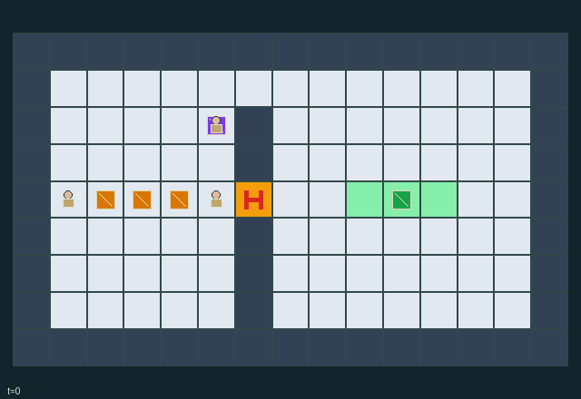

GI086 · Lockstep Gantry

Original recording scope: Original replay view · Mode: Fixed-script demonstration
Additional generated state replay (different trajectory / full-state debug)

Deliver the actual three-cell beam horizontally with center [10,4] before a jam or the 80-step bound.
Identity and original contract
3 independently actionable roles; 8 discrete commands per role; 40 native observation columns per role; original horizon 80 steps. Declared per-step reward range: -6.0 to 9.0. Observation regime: fully_observable.
Source SHA-256: f1aed63c212284b84fd930524b3b404e66b775c0db0d550431329fe36664c0c2
The objective, rewards, population, map and horizon remain original. A preview is not a success claim.
Objective and gameplay
Deliver the actual three-cell beam horizontally with center [10,4] before a jam or the 80-step bound.
Two distinct gripped ends require equal motion or rotation commands; a third worker can recharge the shared pool, refresh the gate, block geometry or exchange roles.
- Grip the two handles two cells from the beam center. Both carriers must choose the same direction or quarter turn.
- The beam occupies three real cells. Translation costs one shared pressure unit; rotation costs two and needs a clear 5x5 swept square.
- A free worker exactly at the winch pumps three charge units, capped at ten, and refreshes the shutter to four turns.
- The shutter timer decreases before movement. Closing on a worker or beam cell causes a terminal jam.
- The center aperture is narrow; an open northern route at y=1 uses more movement. Workers and cargo can obstruct each other.
- Deliver a horizontal beam to center [10,4]. Every live turn costs 0.01; pumping costs its worker another 0.02.
- All roles receive +8 on delivery or -5 on a jam. The public scene is the actual state; witness scripts have not been run.
Ending: Success at the horizontal dock; failure if the timer closes while any worker or beam cell occupies [6,4]. Success excludes a jam.
What this game explores
Complementary production & service: A useful outcome requires ordered stages, scarce equipment or another role's capability. Measure real completed products and resource circulation rather than counting intermediate actions as success.
Joint transport & shared access: Positions, load geometry, occupancy and persistent access constrain whose action can succeed next. Distinguish physical handoff, shared controls and simultaneous force from a cosmetic cooperation label.
These are questions supported by rule structure, not observed learning effects.
Play it: operating walkthrough
crucibles play --game gi086Keep Python running and open its printed address. Select this game, set a seed and press Create session. The game itself is always English.
Assign a role range to Host with Assign / take over, or Assign all roles. Invite a second participant with Create player invitation, then assign a disjoint subset. Every original role is available.
For every owned role choose a legal command and press Queue. Arrow keys / WASD queue a declared directional action for the current role camera when available. Space or Advance one joint step advances everyone together. Non-directional games use the selectors.
Unqueued roles use the labelled untrained uniform-legal policy. Take over or release roles before the next step without resetting. Full-state debug is privileged and permanently logged; role cameras preserve permissions. Close the session to retain logs. Server restart does not restore sessions.
Complete command reference
IDs and English labels exactly match the manifest. Availability depends on role, resources, location and phase. An available action can still have no productive effect.
0·WAIT
1·NORTH intent
2·EAST intent
3·SOUTH intent
4·WEST intent
5·TOGGLE GRIP at an end handle
6·JOINT QUARTER TURN
7·PUMP at the winch
Roles and capability identifiers
These original role names describe capabilities, not interchangeable skins. Check each owned role's legal selector before planning handoffs.
agent_0·initial west handle carrier; may release and change jobs
agent_1·initial east handle carrier; may release and change jobs
agent_2·initial pump tender; may move, take a handle or obstruct passage
Information and observation permissions
Public fixed map and all dynamic gameplay state are visible to every role; observer identity is appended. There is no privileged renderer-only task information.
The GIF is full-state debug and may reveal hidden entities or private state. Train on obs[agent], not the picture, state tree or another role's private row. Field slices and visibility are in the original manifest.
Reinforcement-learning integration
import jax
from crucibles_jaxmarl import make
env = make("gi086")
key = jax.random.PRNGKey(0)
key, rk, ak, sk = jax.random.split(key, 4)
obs, state = jax.jit(env.reset)(rk)
actions = env.sample_actions(ak, state)
obs, state, rewards, dones, info = jax.jit(env.step_env)(sk, state, actions)
done = dones["__all__"]Observations are float32 vectors of width 40; actions are scalar int32; masks have 8 entries. Supply all 3 roles each transition. Masked sampling is an engineering reference, not a trained learner.
step_env retains terminal data without reset. step performs outer autoreset and keeps terminal data in info["raw_state"] and info["raw_observation"]. Use dones["__all__"] for episode boundaries; separate completion, failure and time limit in analysis.
JIT or vmap equal identities and shapes. Split independent reset, policy and transition keys. Group different shapes explicitly; do not shrink the population or horizon. Host rendering stays outside training.
Training questions and fair evaluation
Define valid completion from the objective before fitting. Preserve original rewards and also report real deliveries/services, losses, resource state, unresolved episodes and per-role returns. Animation is not a reward signal.
A useful outcome requires ordered stages, scarce equipment or another role's capability. Measure real completed products and resource circulation rather than counting intermediate actions as success.
Positions, load geometry, occupancy and persistent access constrain whose action can succeed next. Distinguish physical handoff, shared controls and simultaneous force from a cosmetic cooperation label.
Compare memory, communication or centralized critics under matched actor information. Declare critic access; keep actor inputs role-filtered. Match partner/opponent distributions, masks, compute and checkpoint selection. Final tests never enter fitting or selection.
Independent training runs or source-pairing blocks are inferential units; episodes from one policy are not independent training replications. Save hashes, keys, versions, device, time and cost. Negative, zero, failed and indeterminate outcomes are valid. No trained checkpoint or target score is supplied.
Classification and evidence
Overlapping editorial labels are reading aids, not proof of novelty, difficulty, strategic equivalence or learning effects.
- Complementary production & service
- Evidence
manifest.task.objective: Deliver the actual three-cell beam horizontally with center [10,4] before a jam or the 80-step bound.
- Joint transport & shared access
- Evidence
manifest.task.objective: Deliver the actual three-cell beam horizontally with center [10,4] before a jam or the 80-step bound.
- Evidence
manifest.task.interaction: Two distinct gripped ends require equal motion or rotation commands; a third worker can recharge the shared pool, refresh the gate, block geometry or exchange roles.
- Evidence
scene.rules.0: Grip the two handles two cells from the beam center. Both carriers must choose the same direction or quarter turn.
Source, receipts and preview limits
The additional generated state GIF replays saved untrained legal actions through the original kernel. At most 25 actual endpoints include initial and terminal state; no invented interpolation. It is full-state debug, not the role observation. Where an original scene preview exists, it is displayed first with its own recorded information scope. The two recordings may use different trajectories and views.
Original source, observation slices, manifest and mechanism
Native receipt · Presentation receipt
Engineering passes do not establish learning. Nonzero floating differences remain recorded and undetermined; no new tolerance was introduced. Human scores remain unverified.